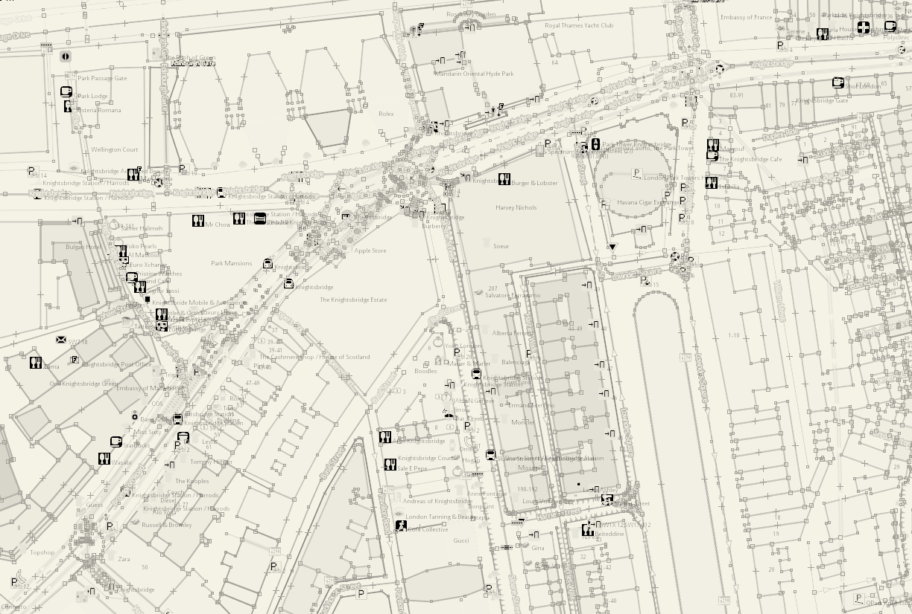
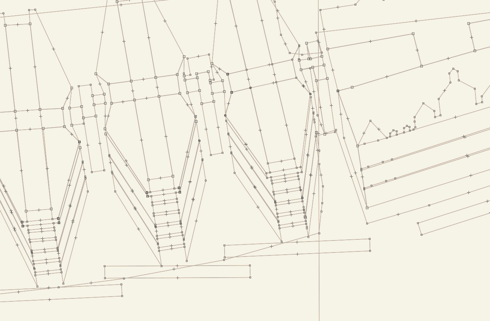
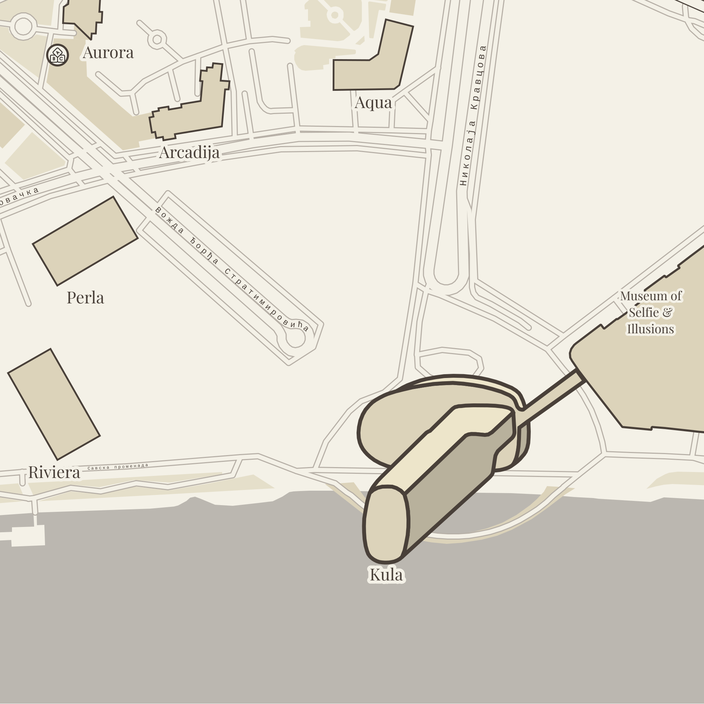
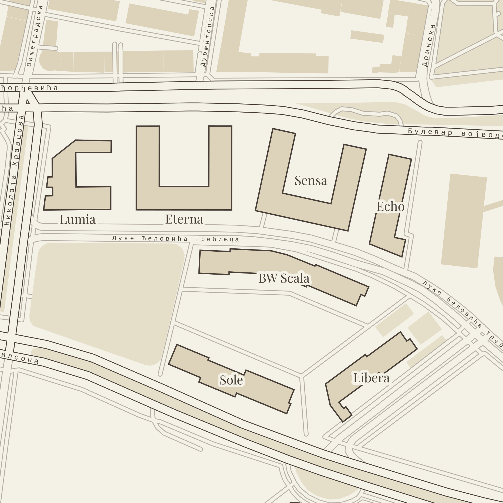
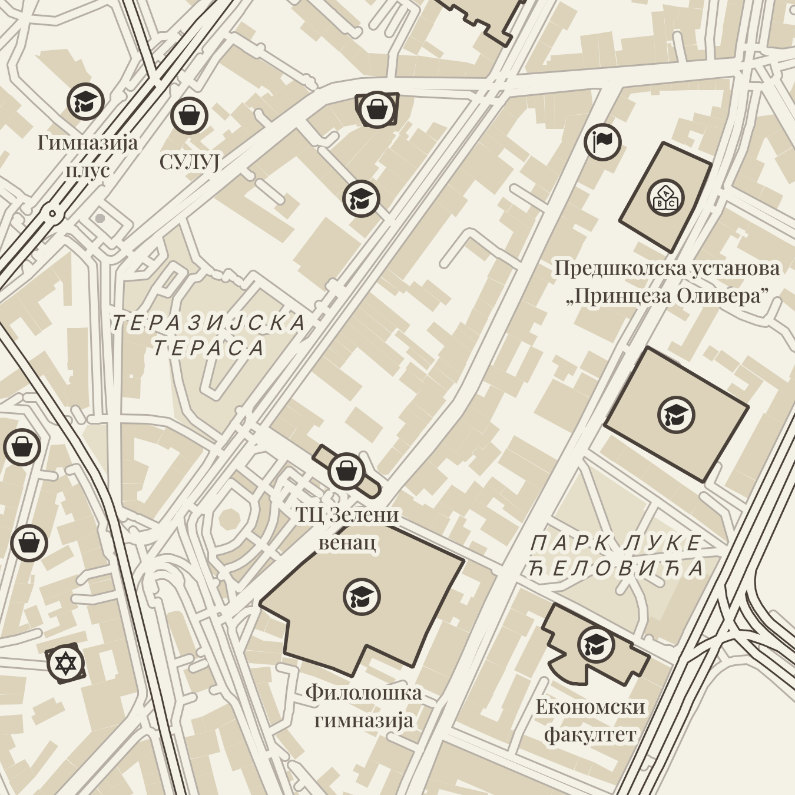
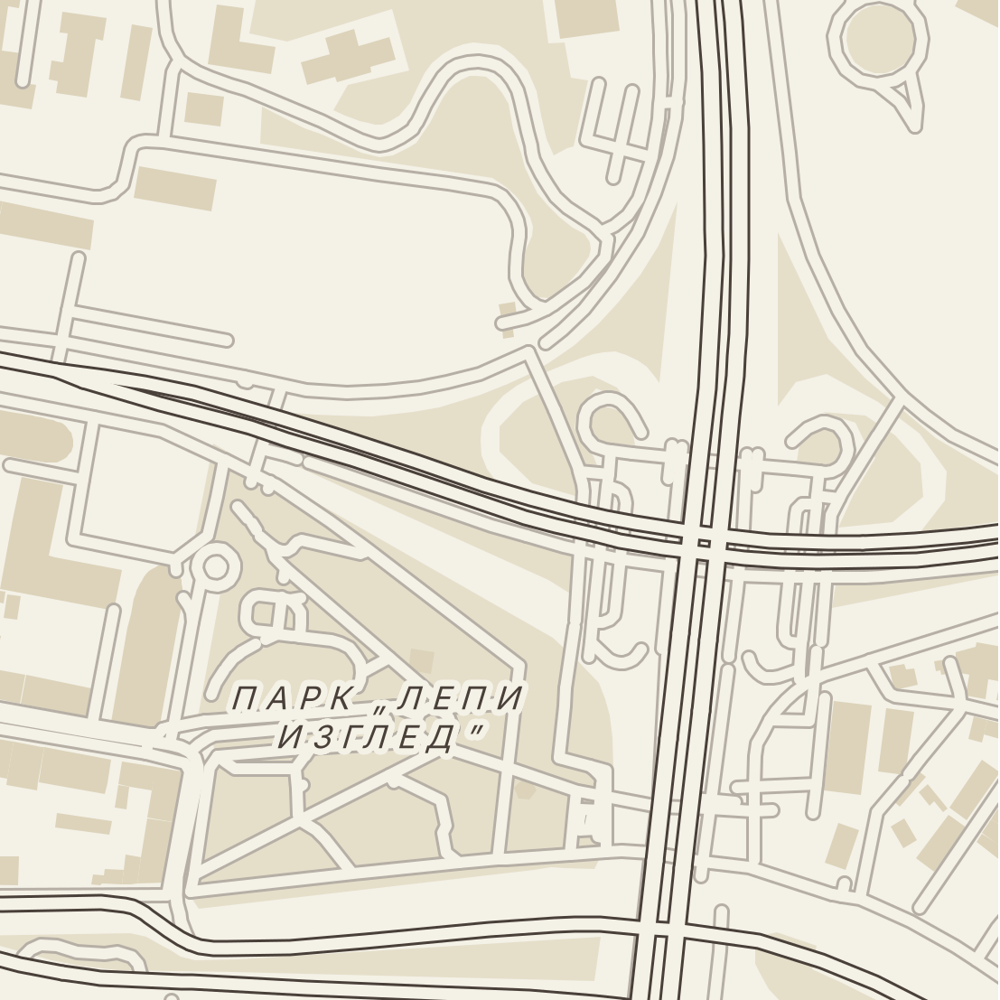
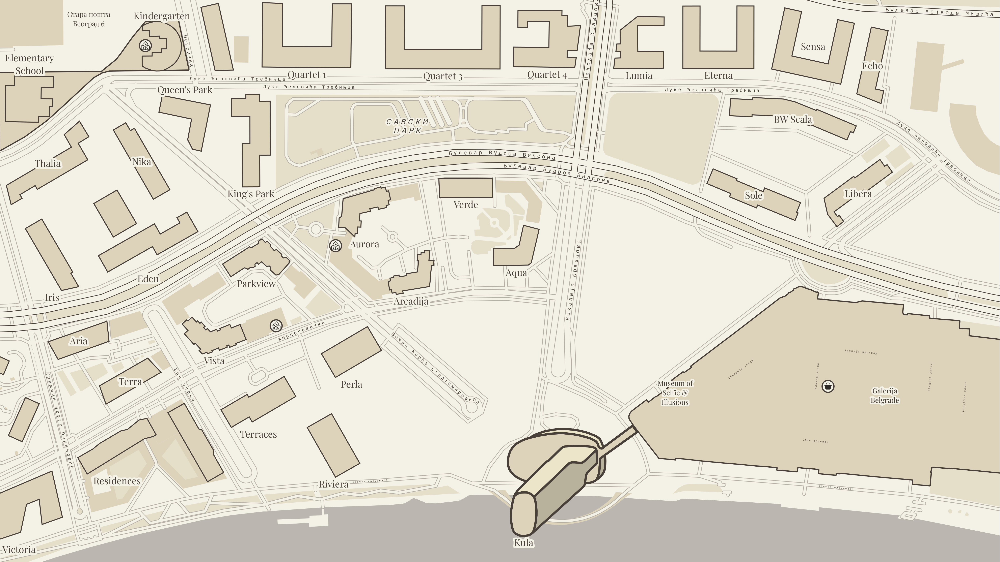
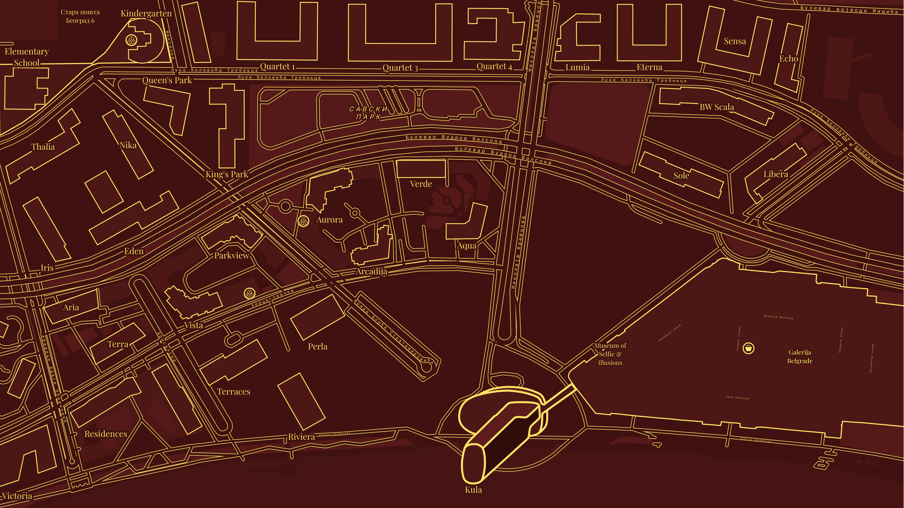

The Spatial Translation EngineCartography & ArchitectureLondon & Belgrade
Bridging Cartography and Architecture
We built a proprietary spatial engine to solve two expensive bottlenecks in the built environment: the messy CAD data architects are forced to clean, and the flat, disconnected maps marketing agencies use to sell properties.
For Architects: Automating OS data extraction to deliver instant, perfect vector voids.
For Agencies: Injecting native 2.5D architectural geometry into editorial-grade map libraries.
Eliminating days of manual tracing in CAD and Adobe Illustrator.
Delivering the fully layered, mathematically embedded source files.
Design technology teams and junior architects burn days manually tracing messy OS data to build municipal base layers.
Lancer Press acts as the translator between the curved geospatial globe and your local mathematical grid. Our engine automatically ingests raw spatial data, fixes broken topology, and outputs a mathematically perfect, legally compliant vector void.
We eliminate the manual CAD cleanup, delivering a pristine foundation so your studio can drop 3D models straight into the context.
For Creative Agencies
Architecture for Cartographers
Standard property maps float pixel-based 3D renders onto flat, disconnected 2D backgrounds. The result is visual noise that dilutes the prestige of the asset.
We engineer native 2.5D masterplans. By manually tracing the lit and shadowed facets of your building in axonometric projection, we embed the architect's pure structural vision directly into the global grid.
Whether deployed by a developer or a lead creative agency, you receive an editorial-grade, FOGRA47-calibrated map library that frames your development as the absolute center of the market.
The Methodology
Phase 01 // The Reconnaissance
Location Intelligence
We do not rely on automated map downloads. Every mandate begins with an intense period of locational reconnaissance. We spend up to a week manually investigating and authoring the exact geometry of your site, node by node, in spatial editors before our rendering engine is even powered on.

Phase 02 // The Integration
Numeric Art
Most property maps overlay pixel-based 3D renders onto flat 2D backgrounds, resulting in disconnected imagery. Our hybrid process is entirely native. We mathematically embed true 2.5D axonometric geometry directly into the 2D street grid, creating a continuous, infinitely scalable vector masterpiece.

The Four-Tier Architecture
Level 1 // The Hero Asset
Bespoke 2.5D Geometry
Your development commands the absolute center of the canvas. We manually trace the specific lit and shadowed architectural facets of your building in axonometric projection, forcing it to physically rise off the page.

Level 2 // The Plinth
Custom 2D Context
A hero asset cannot float in empty space. The immediate accompanying structures, secondary phases, and complex site footprints are custom-traced and brand-calibrated to frame your property flawlessly within its local grid.

Level 3 // The Anchors
Curated Targets
We manually highlight the neighborhood features that drive your property's valuation. Top-tier schools, heritage sites, and private wealth nodes are custom-drawn as heavy 2D geometry to visually prove the area's absolute prestige.

Level 4 // The Canvas
Automated Purge
Standard maps are cluttered with municipal noise. Our proprietary C++ engine ruthlessly purges surface parking and low-value zoning, generating a beautifully muted, flat 2D architectural background for your Hero Asset.

The Complete Asset Suite
The Configuration
Studio Editions & Branding
Every folio can be rendered in one of our standard, highly curated Studio Editions.
If your development requires strict visual alignment with your existing corporate brand guidelines or marketing collateral, we can engineer a bespoke, brand-matched colorway for an additional premium.

The Print Master (Vellum)

The Digital Display (Ember)
The Delivery
Asset Suite
You receive a fully loaded, pre-press asset library. Every Edition is delivered across a spectrum of architectural scales, provided in both Fully Labeled and Clean states. All files are FOGRA47-calibrated for heavy uncoated print.
The Engine
Hybrid Architecture
We bypass standard design software, combining the bespoke precision of an artisanal design studio with the raw mathematical processing power of custom C++ engineering to extract perfect vectors from public spatial data.
Initiate a Commission
Whether your studio requires an automated upstream CAD void delivered within hours, or your agency requires a fully engineered downstream 2.5D map library for a luxury campaign, direct all inquiries to our protocol below.